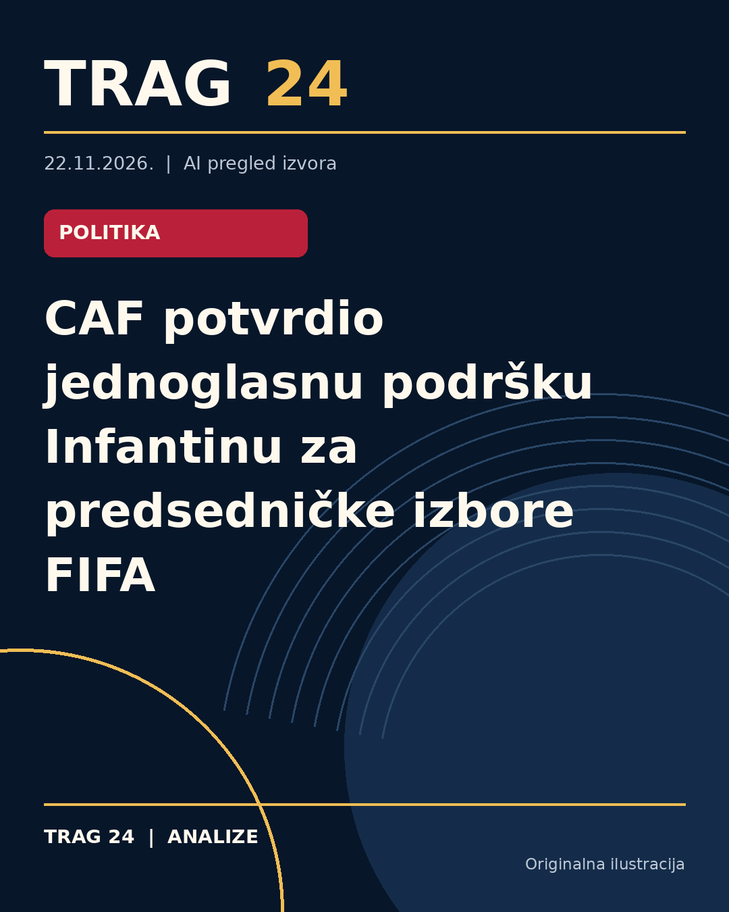

CAF potvrdio jednoglasnu podršku Infantinu za predsedničke izbore FIFA

ŠTA SE DOGODILO
Predsednik Afričke fudbalske konfederacije (CAF) Patris Motsepe izjavio je da Đani Infantino uživa podršku svih 54 saveza članica CAF-a za reizbor na mesto predsednika Međunarodne fudbalske federacije (FIFA). Ovo je saopšteno na Generalnoj skupštini CAF-a u Nigeriji, uz aplauz prisutnih članova koji su pozvani da podrže Infantina.
HRONOLOGIJA
Tokom Generalne skupštine CAF-a, Motsepe je izrazio pohvalu Infantinu za njegovu posvećenost tokom prethodnih pet godina i naglasio da afrički savezi jednoglasno stoje iza njega kao kandidata na izborima koji su zakazani za 18. mart naredne godine. U celom događaju prisustvovao je i Francuz Filip Dijalo, jedan od Infantinovih protivkandidata, koji se pridružio aplauzu. Motsepe je takođe istakao povećanje bespovratnih finansijskih sredstava koje je Infantino obezbedio za nacionalne saveze, sa deset na 25 miliona dolara po savezu u četvorogodišnjem periodu.
ŠTA NAVODE IZVORI
Prema dostupnim izveštajima, podrška CAF-a Infantinu temelji se na njegovoj prethodnoj posvećenosti i projektima koje je pokrenuo, kao i na značajnom povećanju finansijskih doprinosa nacionalnim savezima. Pored afričkog kontinenta, deset članica Južnoameričke konfederacije (CONMEBOL) takođe je potvrdilo podršku Infantinu. Protivkandidati na izborima su Filip Dijalo i Kozo Tašima. Navodi izdanja Danasa ističu da je Infantino suočen sa kritikama, posebno iz UEFA, zbog ranije objavljenog plana o prodaji udela prihoda od Svetskog prvenstva privatnim investitorima, od kojeg je kasnije odustao.
ŠTA JE POTVRĐENO
Potvrđeno je da je AFRIČKA fudbalska konfederacija jednoglasno pružila podršku Đaniju Infantinu kao kandidatu za predsednika FIFA na predstojećim izborima. Izbori su zakazani za 18. mart, a pored Infantina kandidatu su i Filip Dijalo i Kozo Tašima. Takođe je potvrđeno da su finansijska sredstva za nacionalne saveze značajno povećana tokom dosadašnjeg mandata Infantina.
ŠTA NIJE POTVRĐENO
Nema potvrde o tome kako će se konkretno odvijati izbornu kampanju između kandidata. Takođe, iznesene kritike prema Infantinu nisu detaljno objašnjene niti je potvrđeno da li one utiču na njegovu podršku u smislu glasanja. Nije poznat i zvaničan stav ostalih kontinenata osim Afrike i Južne Amerike u ovom trenutku.
ŠTA OSTАJE OTVORENO: Ostaje nepoznato kako će glasanje teći i koji kandidat će dobiti većinu potrebnu za pobedu, s obzirom da u prvom krugu treba dvotrećinska većina, a ako ona nije ostvarena planira se drugi krug sa prostom većinom. Takođe, nije poznato da li i na koji način će kritike sa UEFA uticati na izborni proces i finalni ishod izbora predsednika FIFA.
Izvori
- https://www.telegraf.rs/sport/fudbal/4437306-caf-potvrdio-podrsku-infantinu-na-izborima-za-predsednika-fifa
- https://www.danas.rs/sport/fifa-izbori-caf-podrska-djani-infantino/
Ova analiza je pripremljena uz pomoć veštačke inteligencije na osnovu javno dostupnih izvora. Navodi izvora nisu nužno nezavisno potvrđeni.